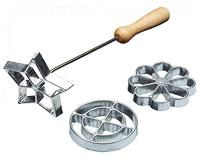
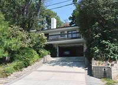

Connie and Stew lived in this new house for years, as their children, Ben and Lisa, grew into promising young persons. The business continued to be profitable and started provided plenty of available cash for home improvements. A large kiln was built for Connie's ceramics ambitions, and all was well.
Stew had arranged with an architect to plan an expansion of the house into the neighboring lot, but meanwhile improvements to the house in its current state were being made. The kitchen in this house was very small, compared to the rest of it, and was the only area that had a low ceiling, the rest of the house being open ceiling. This kitchen was obviously not designed for someone with culinary ambitions.
One of the improvements made was to replace the barely adequate stove in the kitchen with a much more powerful Viking gas range. Stew also mounted an institutional size fire extinguisher conveniently placed in the kitchen.
 Soon after the new stove was installed, Connie decided to make Swedish Rosette cookies. These involve a pot of hot oil and iron molds with a long stem, as in the photo to the left (Borrowed from Kitchen Craft).
Connie put the pot of oil on the stove to heat up, and went about other chores, as was her usual practice. She did not realize how much hotter the Viking range was than her old one - until she saw the baskets hanging from the kitchen ceiling were on fire. The fire was too hot for her to get to the fire extinguisher.
The fire quickly spread to the dining room. The whole patio side of the room was glass, which quickly burst. Just outside that glass was Stews new giant gas grill, with a huge tank of propane. A plug facing the dining room melted loose, allowing the tank to discharge it's contents into the house like a giant flame thrower.
This burned through the wood floor, so flames dropped into the narrow basement where Connie's craft supplies were stored. There were big cans of solvents and oil base paints, which all enthusiastically joined the party.
The fire progressed to Ben's bedroom, faced with sliding glass doors high over the driveway. There was a swarm of plastic model airplanes hanging from the ceiling. These could be seen catching fire and raining down flaming plastic.
The fire guys arrived and put out the fire. One of them remarked, "In home fires most of the damage is usually from water, but here we couldn't find anything to damage".
All that remains of this luxury home is the splash of aluminum I picked up from the driveway. It had dripped down from the sliding glass door of Ben's bedroom.
 Monday morning Stew called the architect and told him there was a change of plan, that the project had become much more extensive.
The new house was much larger - with a huge kitchen. Suspended from the high ceiling, over the stove area, was a big square of polished copper pipe, with sprinkler heads. I don't know if Connie ever again made Swedish rosette cookies.
Eventually Connie insisted they move to a different house, because she was tired of having to go up and down stairs all the time - this house was built into a steep hillside, so there were stairs to deal with.
Note that in the photo, the visible part of the new house is much the same as the old house, as that part was designed to be built on the old foundations. It includes the sliding glass doors over the driveway that the splash of aluminum came from.